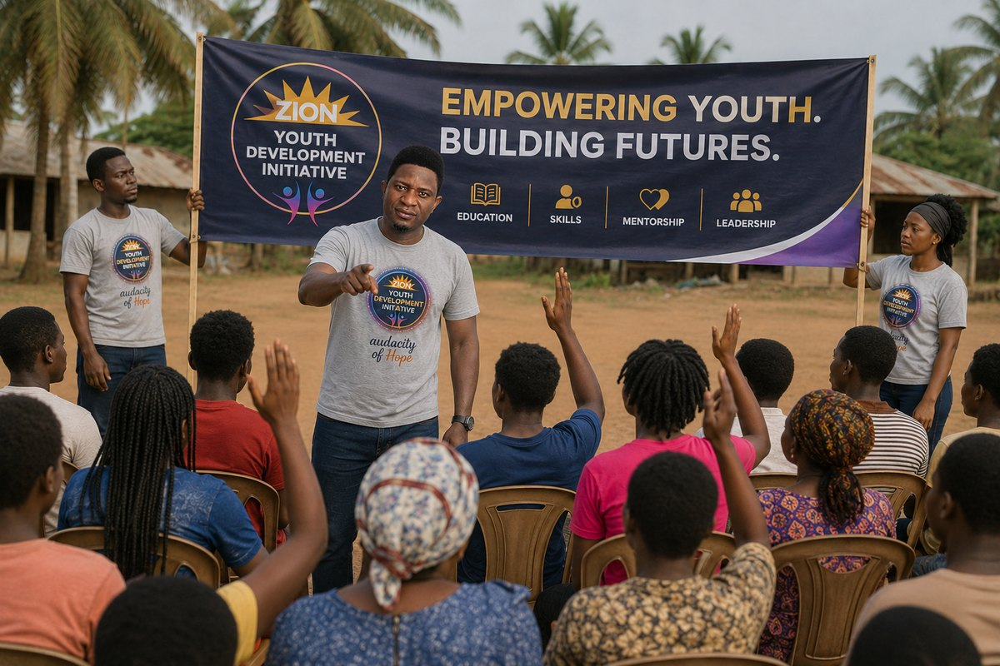
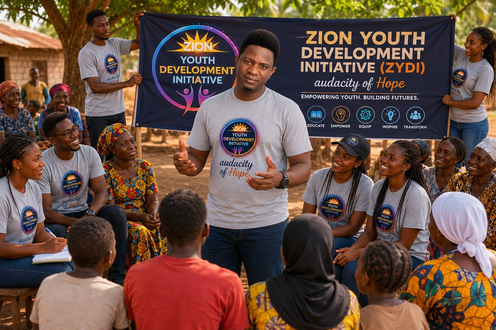
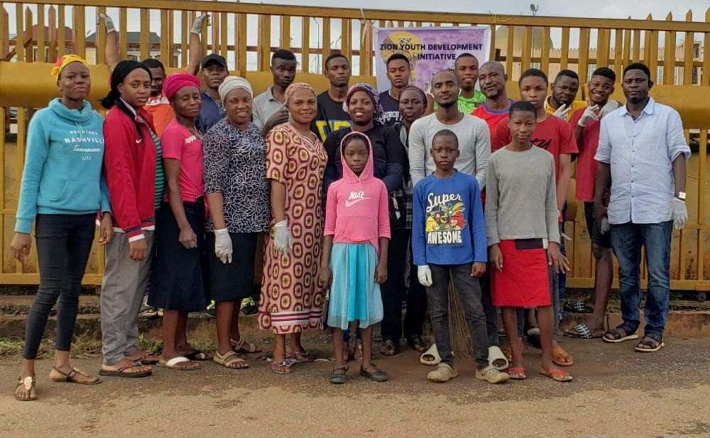
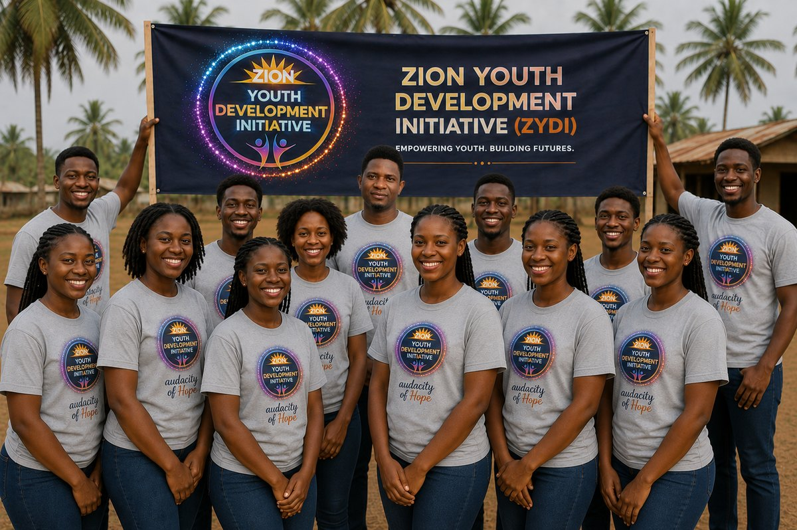

Visionary Leader | Educator | Emerging Technology Professional
Olakunle T. Obademi is a visionary leader, educator, and emerging technology professional dedicated to empowering communities through education, capacity building, and sustainable development. As the President of Zion Youths Development Initiative since 2022, he has spearheaded programs that provide youth and marginalized communities across Africa with access to quality education, vocational skills, and global opportunities. His work bridges grassroots community development with international outreach, helping young people secure educational placements in the Western world for brighter futures.
With a strong background in science and technology, Olakunle earned his B.Sc. in Physics & Electronics from the Federal University of Technology, Akure, Nigeria, and is currently pursuing a Software Development degree at Brigham Young University (BYU). His academic foundation is complemented by hands-on experience in computer literacy training, IT hardware assembly, and network setup.
From 2012 to 2018, Olakunle served as a Sciences and Computer Studies Teacher at DUZEK Christian School in Johannesburg, South Africa, where he taught mathematics, physical sciences, and computer literacy. Later, as a Computer Training Tutor at Obamarg Global in Nigeria (2019-2022), he mentored learners in digital skills, equipping them for modern workforce demands.
Olakunle is passionate about technology and has completed courses in Introduction to IT, Computer Hardware Basics, and Basic Networking, alongside personal projects such as building custom PCs and configuring home networks. Beyond his professional endeavors, he is committed to mentorship and youth advocacy, helping African students access international education opportunities. Guided by his core values of empowerment, innovation, and collaboration, he continues to work towards building a more inclusive and prosperous society.
Since founding Zion Youths Development Initiative, Olakunle has led various grassroots and youth empowerment projects, with a strong focus on Ondo State, his home region in Nigeria, while expanding outreach to other parts of the country.

Organized workshops teaching basic computer literacy, coding fundamentals, and digital job readiness to over 100 youths.

Partnered with local leaders to refurbish classrooms, provide desks, and supply learning materials for rural schools.

Collaborated with volunteer doctors to offer free medical check-ups, health education, and basic medication to underserved communities.

Helped connect talented African youths with scholarship opportunities abroad and guided them through the application process.